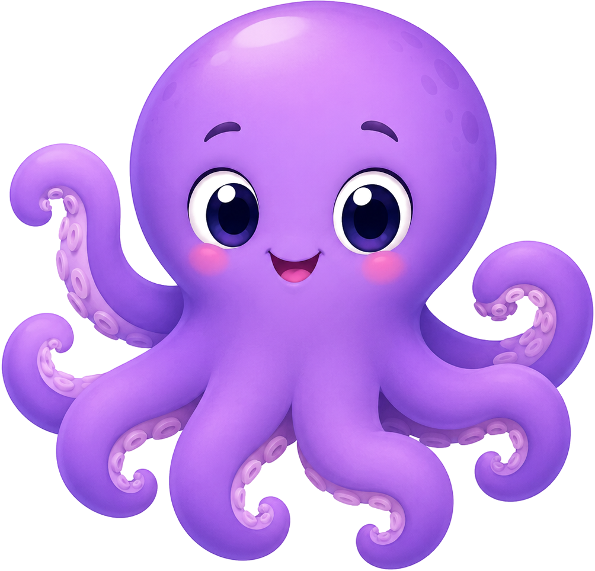

הַשּׁוּנִית הַשְּׁקֵטָה
🐟 🐟 🐟 🐟 🐟
בַּשּׁוּנִית שֶׁל נוּנִי חַיִּים חֲמִשָּׁה דָּגִים — כָּל אֶחָד שָׁר צְלִיל אַחֵר.
אֲבָל הַיּוֹם הַיָּם שָׁקֵט — הַדָּגִים שָׁכְחוּ אֶת הַצְּלִיל שֶׁלָּהֶם.
בּוֹאוּ נַעֲזֹר לְכֹל דָּג לִמְצֹא אֶת הַצְּלִיל שֶׁלּוֹ!